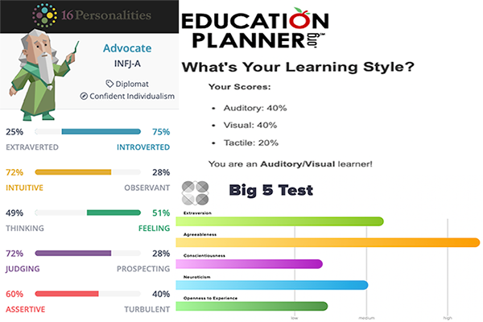

Personal Profile
The results of these test didn't really return anything too surprising if I'm being honest. I have always been quite a solitary person, particularly with my time outside of work. To some extent in my work life as well with commercial kitchens having a fairly clear cut “this is your part of the job, not someone else's job” kind of mentality. So coming out on the side on introverted was definitely not a shock. The Myers-Briggs coming out slightly on the side of feeling over thinking I guess was a little curious.
As the results have shown and indeed something I have been aware of, and has been a focus of self-improvement is my lacking social skills. My hope is that taking this course through RMIT will not only give me the IT skills, but help me better contribute in a group setting and the confidence to take the lead in areas that I do hold strength in. When forming and operating within a team environment I enjoy working alongside people with a variety of viewpoints and opinions, I feel that exposing yourself to people with ideas that conflict your own help you grow as person.
I'm a very down to earth and easy going kind of guy which is something that has seen me do very well is group settings. Disregarding my social skills which for now we'll label as “Under Construction”, my other skills and strengths such as conflict resolution and ironically being quite good at reading people despite my introversion, along with my attention detail and willingness to learn will give me the ability to be an engaging and compassionate team member. And give me the exposure I need to improve the aforementioned character weaknesses.
 Next Page